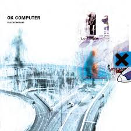

one of my favourite album is OK Computer by Radiohead
Radiohead is an English rock band formed in 1985, consisting of Thom Yorke (vocals, guitar, piano), Jonny Greenwood (lead guitar, keyboards), Ed O'Brien (guitar, backing vocals), Colin Greenwood (bass), and Philip Selway (drums). They’re known for pushing boundaries in rock music, both sonically and thematically, and have had a huge influence on alternative and experimental music.
"OK Computer" is Radiohead's third studio album, released on June 16, 1997, and it marked a massive turning point in their career — and in modern rock in general. While their earlier albums (Pablo Honey, The Bends) had more of a grunge/alt-rock sound, OK Computer was a leap into more experimental territory. It blends: